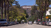

Los Angeles Vibes!
Multimédia
Como podemos visualizar aqui,estas são algumas das bonitas paisagens de los angeles
HollyWood com uma vista magnifica! 
Desfrutem desde mini video da cidade de Los Angels
Poema
Nobody's Perfect,Hannah Montana
Nobody's Perfect!
I gotta work it!
Again and again,
Till I get it right,
Nobody's Perfect!
You live and you learn it!
And if I messed it up sometimes
Nobody's Perfect
Sometimes I work a scheme,
But then it flips on me
Doesn't turn out how I planned,
Gets stuck in quicksand